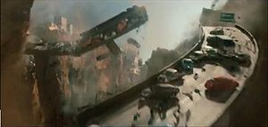

2012
 De: La Frikipedia, la enciclopedia extremadamente seria.
De: La Frikipedia, la enciclopedia extremadamente seria.
2012 es el año en el que se producirá el definitivo fin del mundo. Las religiones más importantes de la Taoísmo, Cheondoísmo, Shintoísmo, Buenrollismo, Ateísmo, Pastafarismo, y todas las que son contrarias al cristianismo, judaísmo e islamismo); el 2012 supondrá la destrucción de la vida en la Tierra tal y como la conocemos, el Armageddon. Asi que si estás leyendo esto, estás en el 2012, sientes calorcillo y temblores y rugidos como los de un troll de las cavernas cagando, y escuchas cómo los ricachones escapan en sus naves espaciales supercaras hacia la salvación, corre/reza (solo si eres religioso), que seguro que te salvas, nunca pierdas la esperanza.
Así se terminara el mundo

Y asi se acaba todo, a tomar por...

Futura portada de la revista TIME
 Querida... hoy llegaré tarde a casa, el tráfico es un desastre
Planes de Emergencia
Actualmente ningún país de la Tierra está preparado para la destrucción global que se producirá en 2012. Solo EE.UU. tiene desarrollado un plan para salvaguardar un reducido número de seres humanos y así evitar la extinción de la raza humana.
Este plan se denomina “Proyecto Nuevo Edén”. Desde 2008 a 2011, doscientos humanos serán enviados a una base secreta lunar para mantenerse con vida durante el Apocalipsis.
Pero ademas, muchos rumoran que Diox vendra en una gigantesca nave suprema (hecha de macarron, claro) y comenzará a follar salvar gente para volverlos psicopatas homosexuales violadores reclutarlos y volverlos frikipedistas que le hagan propaganda para ganar las proximas elecciones mundiales (Diox V.S Dios)
Nota: Dios es democrata.
¿Qué sucederá en 2012
Véase la lista de cosas que sucederán en 2012.
Personajes incluidos en el proyecto Nuevo Edén
Estadísticas para el Fin del Mundo
- El 99,99% de vida animal en la Tierra desaparecerá en los primeros 4 seg. del Apocalipsis.
- El 65,33% de la vida vegetal morirá en los primeros 24 seg. del Apocalipsis.
- Si Ajenjo es un agujero negro, la Tierra y la Luna serán completamente absorbidas y desintegradas cuando Ajenjo llegue a la órbita de Júpiter. Obviamente, el Proyecto Nuevo Edén será un fracaso…
- Si Ajenjo es un planeta errante, el impacto devastador partirá a la Tierra en dos nuevos objetos celestes que se llamarán Alpha y Beta. Si uno de estos objetos rebota con la Luna, el proyecto Nuevo Edén será un fracaso. Si no lo hace, posiblemente la dependencia gravitacional de la luna con respecto a la Tierra, hará que pierda la órbita, y se acerque a lo que primero pille, el sol, por ejemplo. Haciendo que el proyecto Nuevo Edén, sea un Fracaso.
- Confirmado, el proyecto Nuevo Edén no tiene posibilidades de éxito en la luna.
- Existe un 89 % de posibilidades de que la Tierra se libre de Ajenjo, pero aún quedarían otros 4 posibles finales del mundo reconocidos, por lo que se predice que la vida será inviable en la Tierra en 2013.
- El proyecto eden sera un fracaso de cualquier forma, asi que no mantengais vuestras esperanzas.
¿Que pasará?
¿Que tengo que hacer...
Autor(es):
- Fordus
- Doctor grijander
- Jouss
- Azulejos
- LucX
- Neny
- Ultrageno
- Mad Max
- José Daniel Chamorro
- Luchox tube luchox
Frikipedia 2005-2016, Licencia
GFDL 1.2 - Extraído por FrikiLeaks